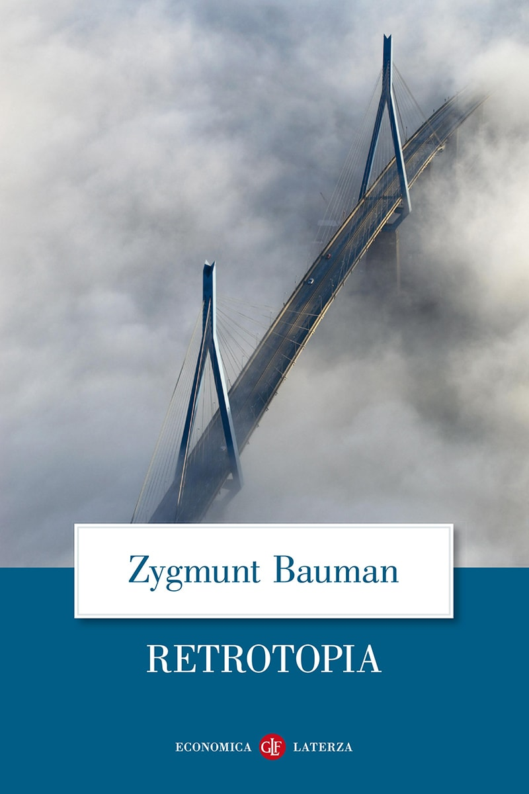
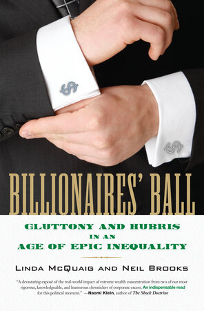

30:31 · 8 OPERE
Cultura e "retrotopia".
Il filo del discorso
Il rapporto fra cultura e potere viene discusso attraverso un confronto polemico fra Retrotopia e Billionaires’ Ball di Linda McQuaig e Neil Brooks. Dr Divago mette in dubbio il significato della grande visibilità editoriale e propone di rispondere a un libro con un altro libro, portando il dibattito sulle disuguaglianze e sui presupposti del successo economico. Del volume di McQuaig e Brooks richiama la crisi del 2008, il potere di influenza dei grandi patrimoni e il contributo collettivo alla produzione della ricchezza. L’esempio dell’informatica permette di contrapporre la figura dell’imprenditore alla lunga storia di conoscenze da cui dipende ogni tecnologia. Il relatore passa così dal mito dell’uomo che si fa da sé alla perdita del senso storico: un episodio raccontato da Hobsbawm, sulla visita di Mitterrand a Sarajevo, diventa figura della difficoltà di riconoscere i nessi con il passato. Seguono osservazioni sull’istruzione tecnica e sulla capacità di opporsi alle interpretazioni dominanti. Gli esperimenti di Milgram e Asch introducono il rapporto fra autorità, consenso e responsabilità individuale, mentre Propaganda di Bernays e I persuasori occulti di Packard riportano alla costruzione dei messaggi. La conclusione riprende la figura di chi vede il re nudo: argomentare significa esporsi alla possibilità dell’errore, ma anche sottrarsi all’accettazione passiva di ciò che altri affermano. Le accuse generali di complicità e controllo restano tesi del relatore.
I libri nel discorso

Retrotopia
Copertina: Laterza · Economica 911 · 2020
Immagine autentica dell’opera, controllata visivamente; non identifica l’edizione usata nel video.
Retrotopia è annunciato esplicitamente; il volume di Bauman è già presente nella biblioteca.
Passaggio 0:50 ↗ · Fonti e libro ↗
Billionaires’ Ball. Gluttony and Hubris in an Age of Epic Inequality
Copertina: Beacon Press · 2012 · edizione rilegata
Immagine autentica dell’opera, controllata visivamente; l’edizione di riferimento non è attribuita al filmato.
Linda McQuaig, Neil Brooks, titolo e sottotitolo sono espliciti; l’anno 2012 è controllato nel libro dal relatore.
Passaggio 7:11 ↗ · Fonti e libro ↗
Bibbia
Copertina: San Paolo, 2014 · Nuova Versione dai Testi Antichi · edizione di riferimento
La domanda sul guadagno del mondo e sulla perdita dell’anima è una parafrasi evangelica: Marco 8,36 e paralleli.
Passaggio 9:18 ↗ · Fonti e libro ↗
Discorso sul metodo
Identificazione probabile
Copertina: Laterza · Economica 127 · opera in collana dal 1998, ristampa 2025 · traduzione di Maria Garin
Immagine autentica dell’opera, controllata visivamente; l’edizione di riferimento non è attribuita al filmato.
Cartesio e il dominio della natura rimandano probabilmente alla parte VI del Discorso sul metodo; titolo non annunciato.
Passaggio 17:29 ↗ · Fonti e libro ↗
Il secolo breve. 1914-1991
Identificazione probabile
Copertina: BUR · La storia / Le storie, 2014
Immagine autentica dell’opera, controllata visivamente; l’edizione di riferimento non è attribuita al filmato.
Hobsbawm e l’episodio della visita di Mitterrand a Sarajevo rimandano probabilmente all’introduzione del Secolo breve, titolo non pronunciato.
Passaggio 18:21 ↗ · Fonti e libro ↗
Propaganda
Copertina: Apogeo · Saggi, marzo 2026 · traduzione e redazione Aldo Ballerini
Copertina autentica dell’edizione Apogeo del marzo 2026, successiva alla registrazione del video: è un riferimento bibliografico attuale, non l’esemplare citato nel filmato. Titolo originale dell’opera Propaganda, 1928.
Bernays e il libro Propaganda sono espliciti.
Passaggio 26:59 ↗ · Fonti e libro ↗
I vestiti nuovi dell’imperatore
Identificazione probabile
Copertina: Rizzoli, 2014 · eBook di riferimento
Il motivo del re nudo richiama probabilmente la fiaba di Andersen; il titolo non è pronunciato.
Passaggio 27:59 ↗ · Fonti e libro ↗
I persuasori occulti
Copertina: Einaudi · ET Saggi · 2015 · traduzione di Carlo Fruttero
Immagine autentica dell’opera, controllata visivamente; l’edizione di riferimento non è attribuita al filmato.
Vance Packard e I persuasori occulti sono riconoscibili nonostante la deformazione della trascrizione automatica del nome.
Passaggio 28:47 ↗ · Fonti e libro ↗